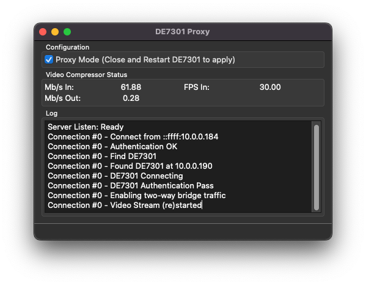

Note
In Limited Beta. Product launch targeted Q2 ‘23. Everything is subject to change.
Internet & WiFi Access¶
Local LAN Mode¶
By default the DE7301 application operates in local LAN mode. The DE7301 hardware sends an uncompressed, line & frame synchronized copy of the display data to the application. This prioritizes low latency and a locked display refresh rate. In Local LAN mode, only one client may be connected to the DE7301 hardware at a time.
The Mac/PC on the local LAN must be Gigabit or faster, as the DE7301 utilizes significant bandwidth:
For 60 FPS, the datarate is 124.89 Megabit/sec
For 30 FPS, the datarate is 62.45 Megabit/sec
For 15 FPS, the datarate is 31.22 Megabit/sec
For 10 FPS, the datarare is 20.81 Megabit/sec
Directly putting the DE7301 hardware on the internet is not feasible and not recommended; the upload rates required are not commonly found in residential ISPs.
Note
Compression of the Local LAN signal is being worked under Github issue 9.
Proxy Mode¶
The DE7301 software, running in “Proxy Mode”, receives the high bandwidth Local LAN signal and applies lossless compression to it. The compressed signal is then suitable for remote access over the internet, or local access over WiFi. Proxy mode may be directly exposed to the internet through a NAT mapping on your router. See your router manufacturer for instructions on port forwarding. Forward TCP port 4242 to the IP address of the proxy server.
Highlights:
Remote access over the internet.
Compression ratio of over 200:1, allowing a fullscreen waterfall to use ~1Mbit/sec.
Encrypted by default, utilizing the same Radio Access File and TLS1.2 connection.
Unlocked refresh rate and variable latency
Allows multiple clients to connect
Overall system requirements are:
Upload of 5Mbit/second (recommended), 1.5Mbit/second (required)
A public IP address (No Carrier-grade NAT)
Ability to forward a TCP port from your router to the local PC
Always on computer local to the radio
Bandwidth Estimates (Framerate independent)
Menu Screens: 0.01 Mbit/sec
VFO Screen, No Waterfall: 0.01 Mbit/Sec
Full screen Spectrum Scope, Not Busy: 0.3 Mbit/sec
Full screen Spectrum Scope, Very Busy: 1Mbit/sec
Proxy Mode Server Setup¶
To run in Proxy Mode, first follow the Getting Started Guide. Once you can view and control your radio, go into Settings and Check “Proxy Mode”. Close and restart the DE7301 application, and you will see the Proxy application running.
Proxy Mode Client Setup¶
On the remote computer, open the DE7301, go to Settings, and enter the IP address of your proxy server. The client should then connect through the proxy, which you can verify by observing the server application output.